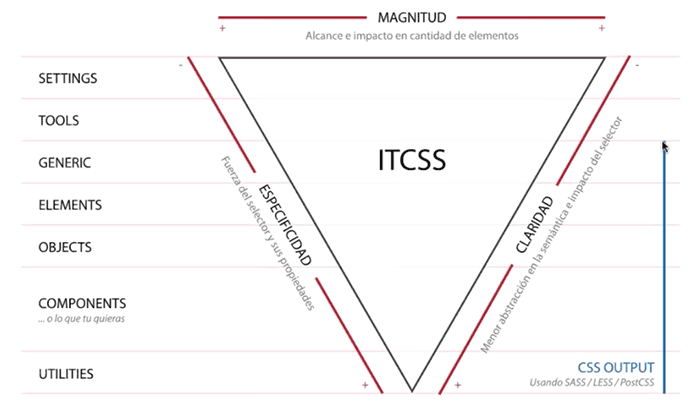
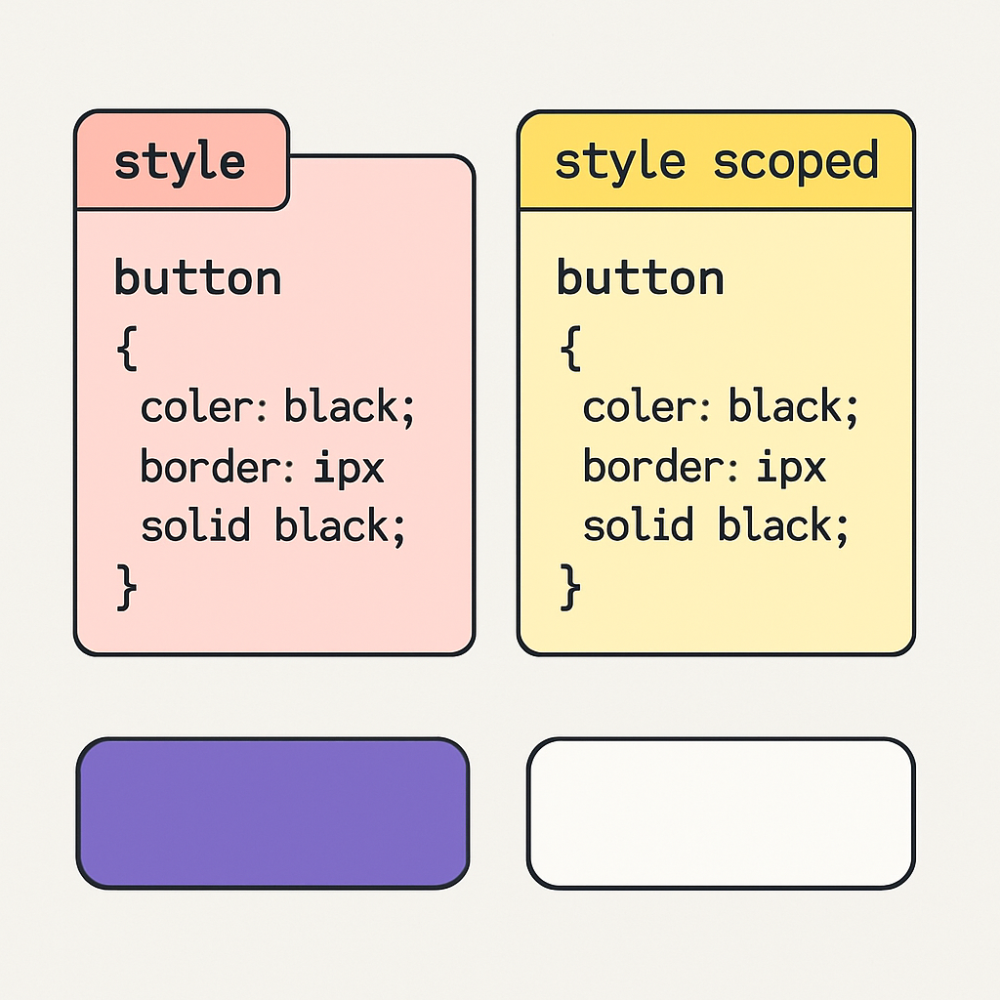

Introducción
En esta exposición abordaremos buenas prácticas modernas para organizar y mantener estilos CSS en proyectos escalables y colaborativos. Exploraremos metodologías como ITCSS, la modularización de CSS y el uso de scoped styles en frameworks como Angular, React y Vue.
Selecciona el tema que deseas explorar:
Ejemplos Visuales

Jerarquía de estilos
Organización en capas: desde settings hasta trumps.
Modularidad CSS
Separación de estilos por componente, como botones, tarjetas o encabezados.

Estilos Scoped
Aislamiento de estilos en componentes individuales.